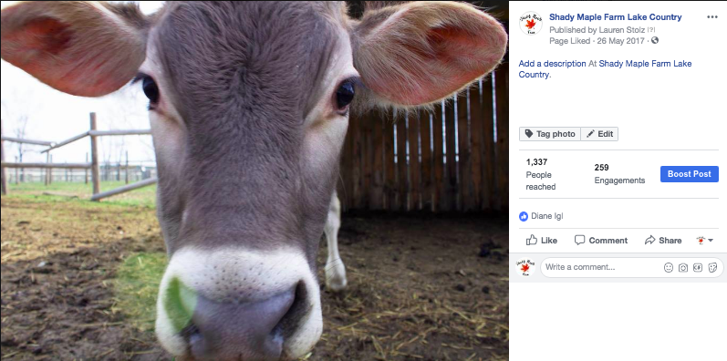

As a student at the University of Miami, I have taken many classes that reflect my competence in the professional world. Below are some of my highlight pieces I have created over the years.

Photoshop Travel Flyer Assignment: Singapore
For this assignment I took the most iconic images that represent Singapore compiled them into a single poster. This poster serves as an advertisment for all the key charatcretics of the country.
Photoshop Travel Flyer Assignment: Shanghai
For this assignment I took the most iconic images that represent Shanghai compiled them into a single poster. This poster serves as an advertisment for all the key charatcretics of the country.

Shady Maple Farm Facebook Page
This is a Facebook page I helped launch and monitor during my Summer Internship's of 2015, 2016 and 2017. The Facebook page included posts of animals and staff that I took.